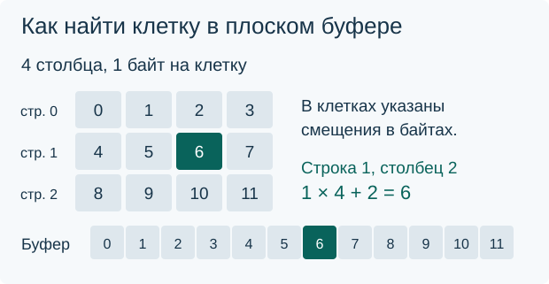

Клеточные карты и изображения
Клетку карты задаёт пара (строка, столбец). Эти же координаты используются для пикселей изображения. Нумерацию начинаем с нуля.
Как координаты превращаются в адрес пикселя
Пусть в изображении в оттенках серого три строки по четыре пикселя. Каждый пиксель хранит яркость в одном байте. Если строки плоского буфера идут подряд без выравнивающих промежутков, смещение пикселя равно row * width + col байтам. Перед клеткой (1, 2) лежит целая первая строка и два байта второй. Значит, её смещение равно 1 * 4 + 2 = 6.

Запиши байт в кадровый буфер
Выбери яркость и нажми на клетку экрана. Затем выбери смещение в буфере и запиши по нему другое значение для той же клетки. Обе записи меняют один массив из 12 байтов.
Экран · 3 строки × 4 столбца
Байты буфера в hex, по возрастанию адресов
Так можно хранить данные для контроллера дисплея. В примерах ниже встречается и vector<vector<...>>. У каждой строки такого вектора собственная область памяти. Чтобы добраться до клетки, сначала выбираем строку, затем элемент этой строки. Как кадр попадает на экран
Как направление меняет координаты
Строки считаются сверху вниз, столбцы слева направо. При одном шаге меняется только одна координата.
| Номер | Направление | Прибавить к строке | Прибавить к столбцу |
|---|---|---|---|
| 0 | ↑ север | −1 | 0 |
| 1 | → восток | 0 | +1 |
| 2 | ↓ юг | +1 | 0 |
| 3 | ← запад | 0 | −1 |
Координаты и направление вместе образуют позу. При повороте направо новый номер направления равен (direction + 1) % 4. При движении прямо умножаем сдвиг из таблицы на число шагов. Например, два шага на север из (3, 2) ведут через (2, 2) в (1, 2).
C++
#include <utility>
using std::pair;
pair<long long, long long> move(long long row, long long col,
int direction, long long steps) {
const int row_offsets[] = {-1, 0, 1, 0};
const int col_offsets[] = {0, 1, 0, -1};
return {row + steps * row_offsets[direction], col + steps * col_offsets[direction]};
}
Тот же алгоритм на Python
def move(row, col, direction, steps):
offsets = [(-1, 0), (0, 1), (1, 0), (0, -1)]
row_offset, col_offset = offsets[direction]
return row + steps * row_offset, col + steps * col_offset
Формула описывает движение по свободной плоскости. Номер направления должен быть от 0 до 3, число шагов — неотрицательным, а результат вычислений в C++ должен помещаться в long long. Если есть стены, проверь допустимость каждой промежуточной позиции или вычисли расстояние до препятствия перед решением о перемещении.
Рамка группы клеток
После обхода карты известны клетки одной связной области. Возьмём три клетки (1, 1), (1, 2) и (2, 1). На схеме они отмечены ×.
столбец 1 столбец 2
строка 1 × ×
строка 2 × ·
Самая верхняя строка области — 1, самая нижняя — 2. По столбцам границы тоже 1 и 2. Чтобы найти такую рамку у любой непустой области, начинаем с первой клетки и расширяем границы после чтения каждой следующей.
C++
#include <algorithm>
#include <array>
#include <utility>
#include <vector>
using std::array;
using std::max;
using std::min;
using std::pair;
using std::vector;
array<int, 4> bounding_box(const vector<pair<int, int>>& cells) {
int top = cells.front().first;
int bottom = top;
int left = cells.front().second;
int right = left;
for (auto [row, col] : cells) {
top = min(top, row);
bottom = max(bottom, row);
left = min(left, col);
right = max(right, col);
}
return {top, left, bottom, right};
}
Тот же алгоритм на Python
def bounding_box(cells):
top = bottom = cells[0][0]
left = right = cells[0][1]
for row, col in cells:
top = min(top, row)
bottom = max(bottom, row)
left = min(left, col)
right = max(right, col)
return top, left, bottom, right
Функция возвращает (верх, лево, низ, право). Обе границы включены, поэтому площадь равна (низ − верх + 1) · (право − лево + 1). На схеме площадь равна четырём, а заняты три клетки. Если список не содержит повторов, равенство площади рамки и числа клеток означает, что рамка заполнена целиком. Рамку можно обновлять прямо в ходе обхода компоненты, если потом не требуется хранить сами клетки.
Как сохранить несколько признаков одной клетки
Состояние клетки может учитывать сразу несколько источников. Например, если один датчик обнаруживает синий цвет, а другой жёлтый, по одному биту на каждый цвет сохраняет оба свидетельства. Начнём с двоичной маски 00. Синий цвет (бит 0) даёт 01. После жёлтого (бит 1) получим 01 | 10 = 11. Повторное наблюдение синего оставит 11 | 01 = 11. Так побитовое ИЛИ сохраняет оба признака в любом порядке. Перед первым наблюдением все маски в grid равны нулю.
C++
#include <cstdint>
#include <vector>
using std::uint32_t;
using std::vector;
void record_color(vector<vector<uint32_t>>& grid,
int row, int col, unsigned color) {
grid[row][col] |= uint32_t{1} << color;
}
Тот же алгоритм на Python
def record_color(grid, row, col, color):
grid[row][col] |= 1 << color
Координаты должны быть допустимыми, номер цвета в C++ лежит в диапазоне от 0 до 31. Если клетки приходят от лучевого датчика, перечисли клетки вдоль известного луча и для каждой запиши соответствующее свидетельство. Что значит последний отсчёт и могут ли наблюдения противоречить друг другу, зависит от модели датчика. Приведённая функция хранит факт наблюдения. Когда нужно число наблюдений, требуются счётчики.
Как совместить два набора точек
Поворот квадрата со стороной side_length на 90° по часовой стрелке переводит клетку (row, col) в (col, side_length - 1 - row). Для совмещения двух наборов точек при фиксированном повороте сравни координаты. Если точка (second_row, second_col) второго набора должна перейти в (first_row, first_col) первого, возможен ровно один сдвиг (first_row - second_row, first_col - second_col). Например, в первом наборе отмечены (1, 2) и (1, 3), а во втором — (0, 0) и (0, 1). Сдвиг (1, 2) совмещает обе пары точек. Со сдвигом (1, 3) точка (0, 0) попадает в (1, 3), а (0, 1) — в (1, 4), где совпадения уже нет.
Вместо наложения целых карт каждая пара точек отдаёт один «голос» за свой сдвиг. Если точки внутри каждого набора различны, число голосов равно числу совпадений. rotate_point поворачивает точку, а shift_votes считает голоса уже при выбранном повороте.
C++
#include <map>
#include <utility>
#include <vector>
using std::map;
using std::pair;
using std::vector;
using Point = pair<int, int>;
Point rotate_point(int row, int col, int side_length) {
return {col, side_length - 1 - row};
}
using Shift = pair<long long, long long>;
map<Shift, long long> shift_votes(const vector<Point>& first,
const vector<Point>& second) {
map<Shift, long long> votes;
for (auto [first_row, first_col] : first) {
for (auto [second_row, second_col] : second) {
const long long row_shift = static_cast<long long>(first_row) - second_row;
const long long col_shift = static_cast<long long>(first_col) - second_col;
++votes[{row_shift, col_shift}];
}
}
return votes;
}
Тот же алгоритм на Python
from collections import Counter
def rotate_point(row, col, side_length):
return col, side_length - 1 - row
def shift_votes(first, second):
votes = Counter()
for first_row, first_col in first:
for second_row, second_col in second:
votes[first_row - second_row, first_col - second_col] += 1
return votes
Оба фрагмента возвращают голоса для сдвигов с хотя бы одним совпадением. Если пустые маски или сдвиги с нулём совпадений важны, учти их отдельно. Метод перебирает a · b пар для наборов размеров a и b. Каждое добавление в Counter в среднем занимает постоянное время, а в std::map зависит логарифмически от числа разных сдвигов. Память пропорциональна числу разных сдвигов.
Предвычисление расстояния до преграды
Если на прямоугольной карте много запросов «сколько свободных клеток подряд справа», можно заполнить таблицу одним проходом. Для свободной клетки ответ равен 1 плюс ответ её правого соседа, если сосед тоже свободен. Если справа стена или край, ответ 0. Поэтому обходи строку справа налево. В примере свободная клетка обозначена точкой, стена — решёткой.
C++
#include <cstddef>
#include <string>
#include <vector>
using std::size_t;
using std::string;
using std::vector;
vector<vector<size_t>>
free_to_right(const vector<string>& grid) {
vector<vector<size_t>> result;
for (const auto& row : grid) {
vector<size_t> distances(row.size(), 0);
for (size_t next = row.size(); next > 1; --next) {
const size_t col = next - 2;
if (row[col] == '.' && row[col + 1] == '.') {
distances[col] = 1 + distances[col + 1];
}
}
result.push_back(distances);
}
return result;
}
Тот же алгоритм на Python
def free_to_right(grid):
result = []
for row in grid:
distances = [0] * len(row)
for col in range(len(row) - 2, -1, -1):
if row[col] == row[col + 1] == ".":
distances[col] = 1 + distances[col + 1]
result.append(distances)
return result
Для строки ...#.. удобно проверить таблицу справа налево.
| Столбец | 0 | 1 | 2 | 3 | 4 | 5 |
|---|---|---|---|---|---|---|
| Клетка | . |
. |
. |
# |
. |
. |
| Свободно справа | 2 | 1 | 0 | 0 | 1 | 0 |
Из столбца 1 можно сделать один шаг до стены. В столбце 3 стоит сама стена, поэтому храним служебный ноль. Для остальных направлений меняй ось и порядок обхода так, чтобы сосед был уже обработан. Предвычисление для карты h × w занимает O(h · w) времени и памяти, затем один запрос выполняется за O(1).
Таблица пригодится и при сопоставлении показаний с картой, если показание датчика в модели равно числу свободных клеток до препятствия в выбранном направлении. Когда известна карта, а начальная поза неизвестна, перебери допустимые позы. Для каждой поддерживай текущую позу и сверяй предвычисленное показание в момент, когда по журналу был сделан замер. Первое несовпадение исключает начальную позу. Если хранишь найденные варианты, записывай начальную позу отдельно от текущей.